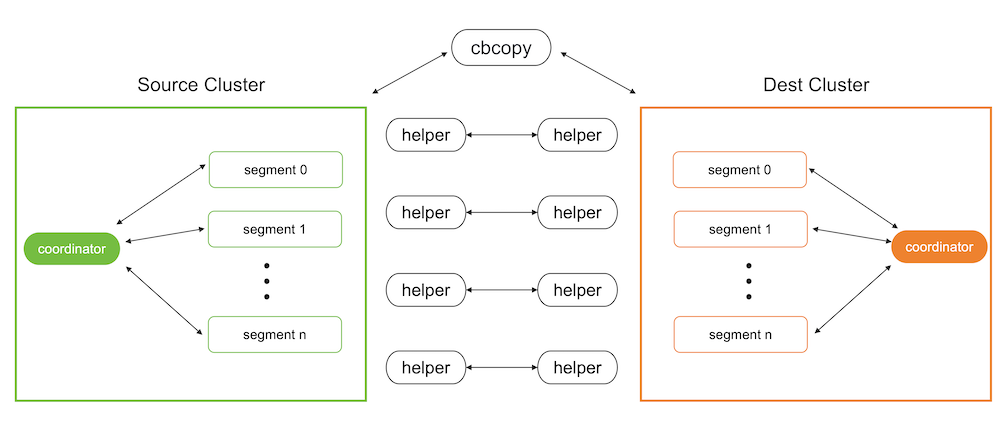

Migrating Data with cbcopy
You can use the cbcopy utility to transfer data between databases in different SynxDB clusters.
cbcopy is a high-performance utility that can copy metadata and data from one SynxDB database to another SynxDB database. You can migrate the entire contents of a database, or just selected tables. The clusters can have different SynxDB versions. For example, you can use cbcopy to migrate data from a Greenplum version 4.3.26 (or later) system to a SynxDB 1 or 2 system, or from a SynxDB version 1 system to a SynxDB 2 system.
The cbcopy interface includes options to transfer one or more full databases, or one or more database tables. A full database transfer includes the database schema, table data, indexes, views, roles, user-defined functions, resource queues, and resource groups. If a copied table or database does not exist in the destination cluster, cbcopy creates it automatically, along with indexes as necessary.
Configuration files, including postgresql.conf and pg_hba.conf, must be transferred manually by an administrator. Extensions such as MADlib and programming language extensions must be installed in the destination database by an administrator.
cbcopy is a command-line tool that includes these features:
-
cbcopycan migrate data between systems where the source and destination systems are configured with a different number of segment instances. -
cbcopyprovides detailed reporting and summary information about all aspects of the copy operation. -
cbcopyallows the source table data to change while the data is being copied. A lock is not acquired on the source table when data is copied. -
The
cbcopyutility includes the--truncateoption to help migrate data from one system to another on the same hardware, requiring minimal free space available.
How does cbcopy work?

Metadata migration
The metadata migration feature of cbcopy is based on gpbackup. Compared to the built-in pg_dump utility, cbcopy has the advantage of being able to retrieve metadata in batches isntead of only a few rows at a time. This batch processing approach significantly enhances performance, especially when handling large volumes of metadata, making it much faster than pg_dump.
Data migration
SynxDB supports starting programs via SQL commands, and cbcopy utilizes this feature. During data migration, it uses SQL commands to start a program on the target database to receive and load data, while simultaneously using SQL commands to start a program on the source database to unload data and send it to the program on the target database.
Migrating Data with cbcopy
Before migrating data, you need to copy cbcopy_helper to the $GPHOME/bin directory on all nodes of both the source and target databases. Then you need to find a host that can connect to both the source database and the target database, and use the cbcopy command on that host to initiate the migration. Note that database superuser privileges are required for both source and target databases to perform the migration.
By default, both metadata and data are migrated. You can use --metadata-only to migrate only metadata, or --data-only to migrate only data. As a best practice, migrate metadata first using --metadata-only, and then migmigrate data with --data-only. This two-step approach helps ensure a more controlled and reliable migration process.
Database version requirements
cbcopy relies on the “COPY ON SEGMENT” command of the database, so it has specific version requirements for the database.
GPDB 4.x- A minimum of GPDB version 4.3.17 or higher is required. If your version does not meet this requirement, you can upgrade to GPDB 4.3.17.GPDB 5.x- A minimum of GPDB version 5.1.0 or higher is required. If your version does not meet this requirement, you can upgrade to GPDB 5.1.0.GPDB 6.x-cbcopyis compatible with all versions of GPDB 6.x.GPDB 7.x-cbcopyis compatible with all versions of GPDB 7.x.CBDB 1.x-cbcopyis compatible with all versions of CBDB 1.x.
Migration Modes
cbcopy supports seven migration modes.
--full- Migrate all metadata and data from the source database to the target database.--dbname- Migrate a specific database or multiple databases from the source to the target database.--schema- Migrate a specific schema or multiple schemas from the source database to the target database.--schema-mapping-file- Migrate specific schemas specified in a file from the source database to the target database.--include-table- Migrate specific tables or multiple tables from the source database to the target database.--include-table-file- Migrate specific tables specified in a file from the source database to the target database.--global-metadata-only- Migrate global objects from the source database to the target database.
Data Loading Modes
cbcopy supports two data loading modes.
--append- Insert the migrated records into the table directly, regardless of the existing records.--truncate- First, clear the existing records in the table, and then insert the migrated records into the table.
Object dependencies
If the tables you are migrating depend on certain global objects (such as tablespaces), there are two ways to handle this:
-
Include the
--with-global-metadataoption (default: false) during migration, which will automatically create these global objects in the target database. -
If you choose not to use
--with-global-metadata, you must manually create these global objects in the target database before running the migration. For example:-- If your tables use custom tablespaces, create them first: CREATE TABLESPACE custom_tablespace LOCATION '/path/to/tablespace';
If neither option is taken, the creation of dependent tables in the target database will fail with errors like “tablespace ‘custom_tablespace’ does not exist”.
Roles
If you want to change the ownership of the tables during migration without creating identical roles in the target database (by disabling the --with-global-metadata option), you need to:
- First create the target roles in the target database
- Use the
--owner-mapping-fileto specify the mapping between source and target roles
For example, if you have a mapping file with:
source_role1,target_role1
source_role2,target_role2
The migration process executes statements like:
ALTER TABLE table_name OWNER TO target_role1;
If the target role doesn’t exist in the target database, these ownership change statements will fail with an error like “role ‘target_role1’ does not exist”.
Tablespaces
cbcopy provides three ways to handle tablespace migration:
-
Default Mode - When no tablespace options are specified, objects will be created in the same tablespace names as they were in the source database. You have two options to ensure the tablespaces exist in the target database:
- Use
--with-global-metadatato automatically create matching tablespaces - Manually create the tablespaces in the target database before migration:
CREATE TABLESPACE custom_space LOCATION '/path/to/tablespace';
- Use
-
Single Target Tablespace (
--dest-tablespace) - Migrate all source database objects into a single specified tablespace on the target database, regardless of their original tablespace locations. For example:cbcopy --dest-tablespace=new_space ... -
Tablespace Mapping (
--tablespace-mapping-file) - Map source tablespaces to different target tablespaces using a mapping file. This is useful when you want to maintain separate tablespaces or map them to different locations. The mapping file format is:source_tablespace1,target_tablespace1 source_tablespace2,target_tablespace2
Note:
- For the default mode, either use
--with-global-metadataor ensure all required tablespaces exist in the target database before migration - If you need to migrate objects from different schemas into different tablespaces, you can either:
- Use
--tablespace-mapping-fileto specify all mappings at once - Migrate one schema at a time using
--dest-tablespacewith different target tablespaces
- Use
Parallel Jobs
--copy-jobs- The maximum number of tables that concurrently copies.
Validate Migration
During migration, we will compare the number of rows returned by COPY TO from the source database (i.e., the number of records coming out of the source database) with the number of rows returned by COPY FROM in the target database (i.e., the number of records loaded in the target database). If the two counts do not match, the migration of that table will fail.
Copy Strategies
cbcopy internally supports three copy strategies for tables.
Copy On Coordinator- If the table’s statisticspg_class->reltuplesis less than--on-segment-threshold,cbcopywill enable theCopy On Coordinatorstrategy for this table, meaning that data migration between the source and target databases can only occur through the coordinator node.Copy On Segment- If the table’s statisticspg_class->reltuplesis greater than--on-segment-threshold, and both the source and target databases have the same version and the same number of nodes,cbcopywill enable theCopy On Segmentstrategy for this table. This means that data migration between the source and target databases will occur in parallel across all segment nodes without data redistribution.Copy on External Table- For tables that do not meet the conditions for the above two strategies,cbcopywill enable theCopy On External Tablestrategy. This means that data migration between the source and target databases will occur in parallel across all segment nodes with data redistribution.
Log Files and Migration Results
After cbcopy completes its execution, it generates several files in the $USER/gpAdminLogs directory:
-
Log File
cbcopy_$timestamp.log- Contains all execution logs, including:- Debug messages
- Error messages
- Operation details
-
Migration Result Files
cbcopy_succeed_$timestamp- Lists all successfully migrated tablescbcopy_failed_$timestamp- Lists all tables that failed to migrate
These files are useful for:
- Monitoring the migration process
- Troubleshooting any issues
- Planning retry attempts for failed migrations
Handling Failed Migrations
When a migration fails partially (some tables succeed while others fail), cbcopy generates two files:
cbcopy_succeed_$timestamp- Lists all successfully migrated tablescbcopy_failed_$timestamp- Lists all tables that failed to migrate
For retry attempts, you can skip previously successful tables by using the success file:
cbcopy --exclude-table-file=cbcopy_succeed_$timestamp ...
This approach helps you:
- Save time by not re-migrating successful tables
- Reduce the risk of data inconsistency
- Focus only on resolving failed migrations
Examples
Basic Migration
# Migrate specific schemas
cbcopy --with-global-metadata --source-host=127.0.0.1 \
--source-port=45432 --source-user=gpadmin \
--dest-host=127.0.0.1 --dest-port=55432 \
--dest-user=cbdb --schema=source_db.source_schema \
--dest-schema=target_db.target_schema \
--truncate
cbcopy reference
See the cbcopy reference page for information about each command-line option.